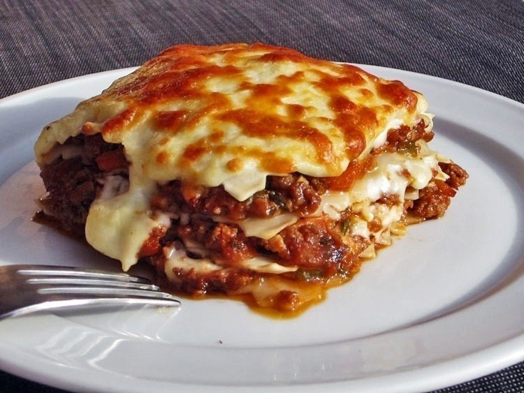
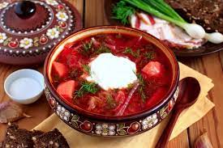
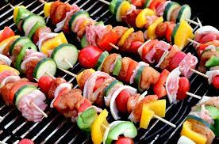
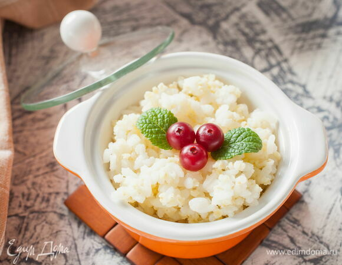
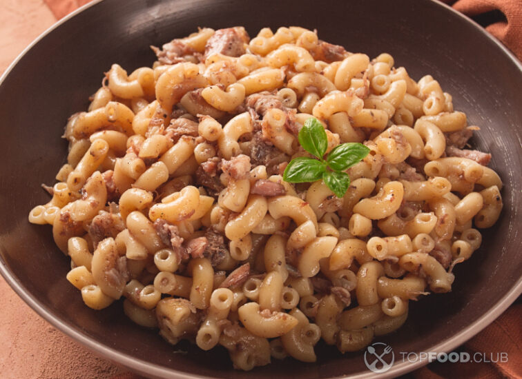
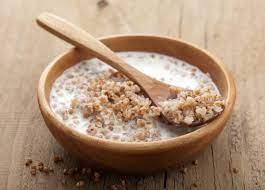
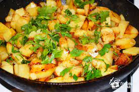
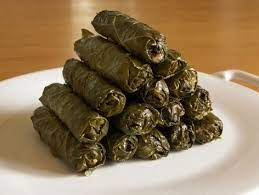

Лазанья
Вкусная и полезна лазанья за 5 минут
Подробнее

Борщ
Борщ как у бабушки в деревне за 15 минут
Подробнее

Шашлык с овощами
Сочный шашлык просто и понятно
Подробнее

Каша рисовая
Рисовая каша, легкий завтрак, обед и ужин
Подробнее

Макароны по-флотски
Макароны по-флотски как самое легкое блюдо
Подробнее

Гречка с молоком
Гречка с молоком это то, что можно есть каждый день. Вкус, знакомый с детства.
Подробнее

Картошка жареная
Один из самых популярных вариантов приготовления картофеля на сковороде - жареная картошка с луком.
Подробнее

Долма
Фарш из баранины со специями, рисом и курдючным жиром, завернутый в виноградные листья
Подробнее